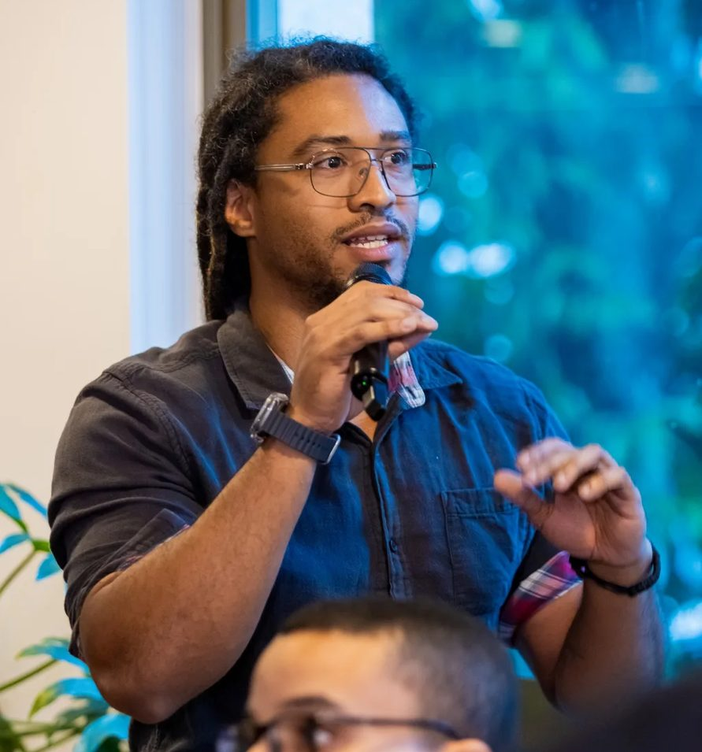

Quem atende você

Eng. André Victor Moreira Costa, engenheiro de produção e de segurança do trabalho, com formação em perícia judicial, CREA-RJ 2014128139. Você fala diretamente comigo, do primeiro contato à entrega do relatório.
O que é análise de causa-raiz
É a investigação de por que um problema aconteceu, para tratar a origem e não só o sintoma. Serve para falhas de processo, acidentes de trabalho, não conformidades, retrabalho e reclamações que voltam mesmo depois de corrigidas. O ponto central é confirmar cada causa com evidência, e não apenas supor.
Em que posso ajudar
- Investigação de acidentes e incidentes, com levantamento dos fatos e das condições de trabalho.
- Falhas de processo, retrabalho e perdas de produtividade que se repetem.
- Diagrama de causa e efeito (Ishikawa) e técnica dos 5 porquês, com verificação das causas.
- Plano de ação com responsáveis, prazos e forma de acompanhamento (por exemplo, no formato 5W2H).
- Apoio para registrar o resultado em relatório que a empresa possa apresentar internamente ou à fiscalização.
Se o caso envolver perícia, processo judicial ou área técnica fora da minha atribuição, eu aviso antes de começar e indico o caminho adequado.
Ferramentas que costumo usar
Leia no blog: Diagrama de Ishikawa: conheça e saiba utilizar.
Como funciona
- Você conta o problema pelo WhatsApp: o que aconteceu, onde e quantas vezes.
- Recebe o orçamento com escopo e prazo, depois que eu entender o caso.
- Levantamento dos fatos, registros e indicadores, com visita ao local quando necessário.
- Análise das causas com evidência e entrega do relatório com plano de ação e responsáveis.
Perguntas frequentes
Qual a diferença entre causa e sintoma?
Sintoma é o que aparece (a peça com defeito, a queda, o atraso). Causa-raiz é o que, se corrigido, impede o problema de voltar. Tratar só o sintoma costuma fazer o problema reaparecer.
Ishikawa ou 5 porquês: qual usar?
Dependem do caso. O Ishikawa organiza muitas causas possíveis em categorias; os 5 porquês aprofundam uma cadeia de causa e efeito. Em geral uso os dois e confirmo cada causa com evidência.
Atende acidente de trabalho?
Posso apoiar a investigação das causas e a revisão das medidas de prevenção, dentro das minhas atribuições. Para laudos periciais e demandas judiciais, veja a página de perícia e assistência técnica.
Quanto custa e quanto tempo demora?
Depende do tamanho do problema, da quantidade de dados e da necessidade de visita. O valor e a estimativa de prazo vêm na proposta, depois que eu entender o caso.
Atendo só no Rio de Janeiro?
Atendo na cidade do Rio de Janeiro e região. A análise de documentos e dados pode ser feita remotamente; visita ao local exige presença.
Tem um problema que se repete?
Conte o que acontece e eu explico como investigar e por onde começar.
Pedir orçamento no WhatsAppWhatsApp 21 99419-2878 · engperitoandre@gmail.com